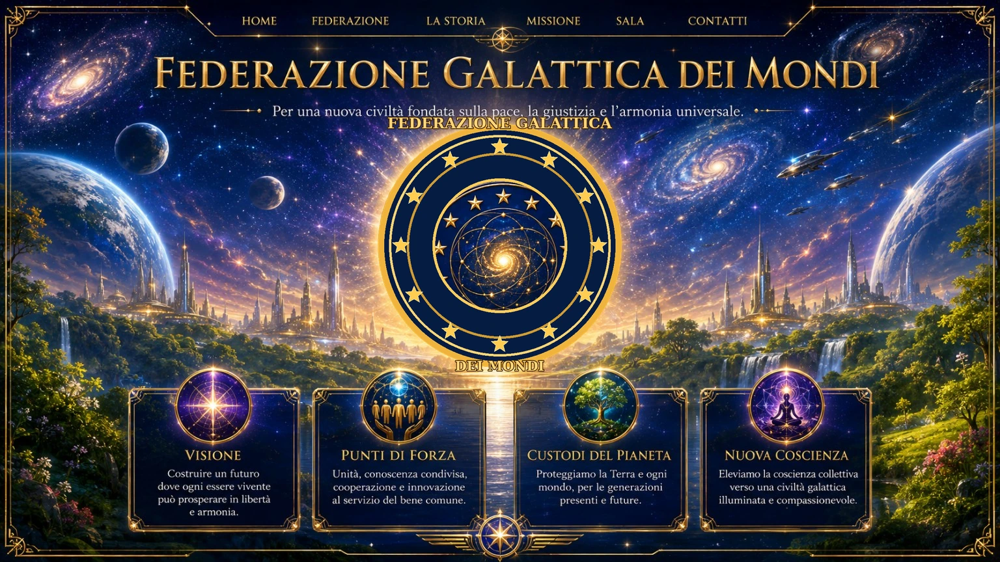
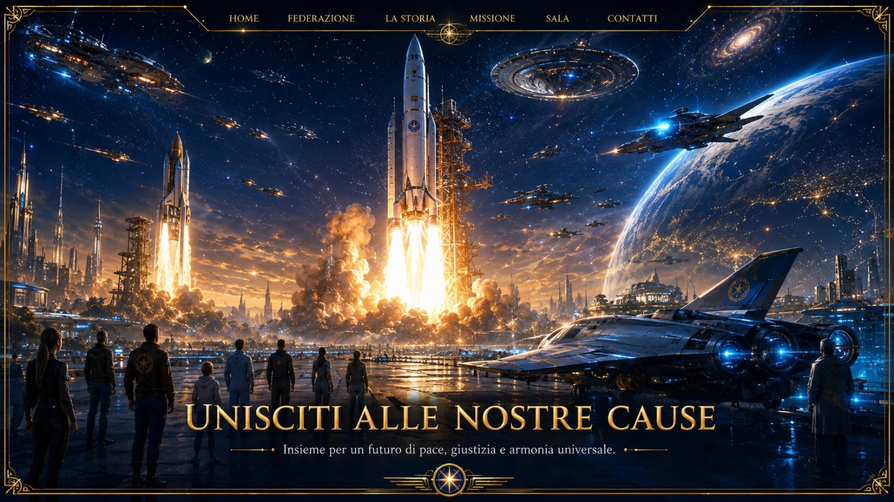

Un progetto di unione, conoscenza e responsabilità
Un luogo dedicato a persone, idee e progetti orientati alla cooperazione, alla tutela della vita e alla costruzione di un futuro più consapevole.
La Federazione
Identità, visione e punti di forza.
⚖I Principi
Pace, giustizia, verità e conoscenza.
⌛La nostra storia
Dalle civiltà del passato alla visione futura.
◎Le Missioni
Direttrici prioritarie e cause.
